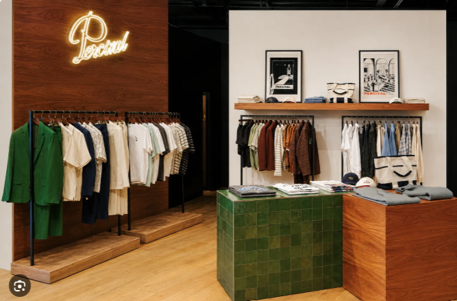

What Happened to the Middle Ground in Fashion?

I enjoy clothes and have no issue paying for quality. What I increasingly have an issue with is paying luxury-inspired prices for products that are nowhere near luxury quality.
The fashion industry seems increasingly polarized. At one end, there is incredibly cheap, mass-produced clothing. At the other end, brands charge extraordinary prices. Between the two, the middle ground is shrinking. As a consumer, I am not looking for a $30 sweater, nor do I want to spend $500 on one. I want to spend $100 to $150 on a well-made sweater that offers good materials, an interesting design, and longevity.
Two brands I genuinely like are Percival and COS. Both have interesting designs and recognizable identities, yet I often struggle to justify their full retail prices given the materials and construction of certain garments. Percival also relies heavily on year-round discounting. Why would I pay full price when another promotion is likely around the corner?

Even Zara has ventured into premium pricing with certain products, further blurring the distinction between fast fashion and contemporary fashion.
I think department stores have suffered from a similar identity crisis. Looking at Hudson's Bay and Nordstrom's unsuccessful expansion into Canada, I question who these retailers were trying to attract. Were they luxury destinations, accessible fashion retailers, or somewhere in between?
However, some brands occupy this increasingly small middle ground quite well. British clothing brand 33mm has built a distinctive identity around nostalgia, vintage silhouettes, and reasonable pricing. Canadian brand Kit and Ace takes a different approach, emphasizing functionality, comfort, and versatility. Both have recognizable identities without trying to position themselves as luxury fashion houses.
There is nothing wrong with expensive clothing, nor is there anything wrong with inexpensive clothing. My frustration is with brands that adopt premium pricing without delivering a proportionately better product.
Wanting to dress well, appreciating interesting designs, and expecting decent quality should not automatically make someone a luxury consumer.